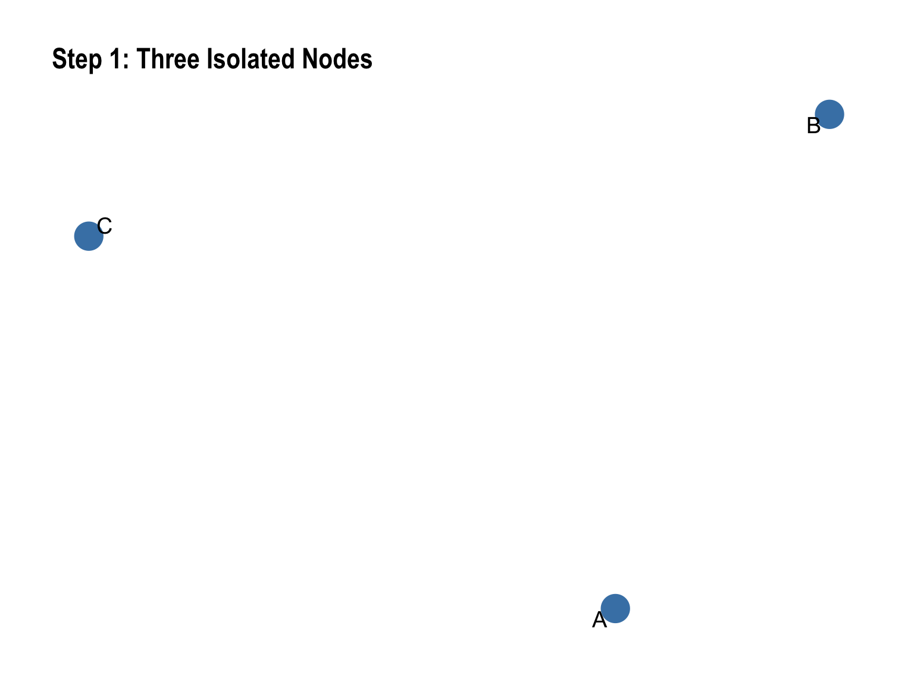
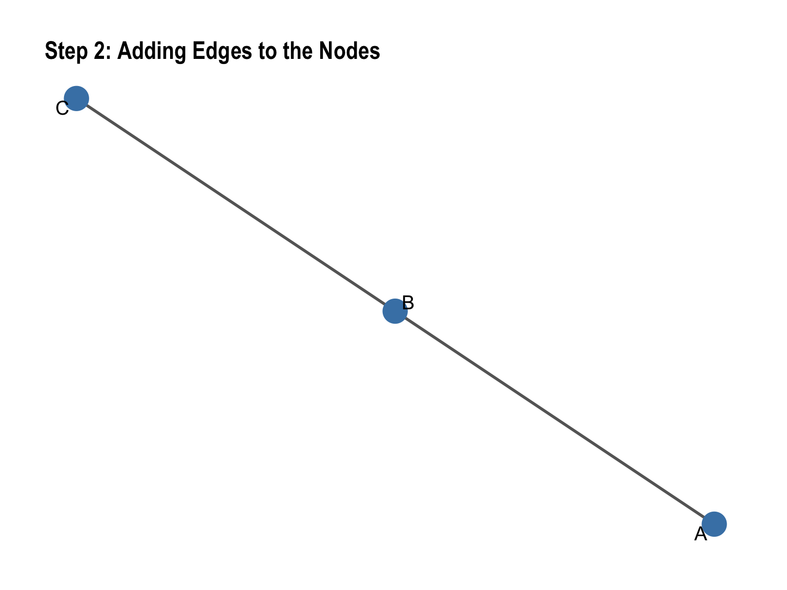
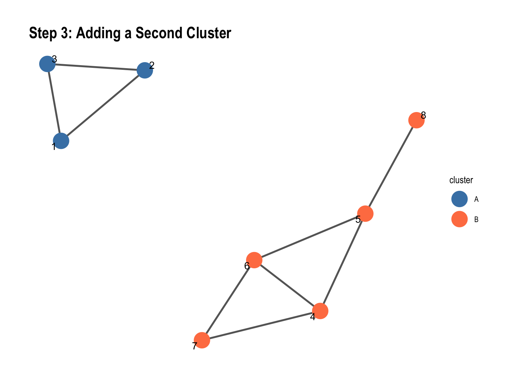
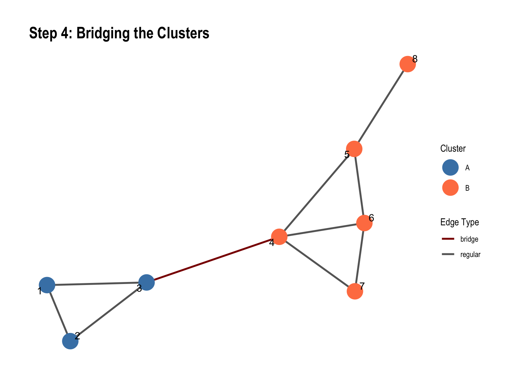
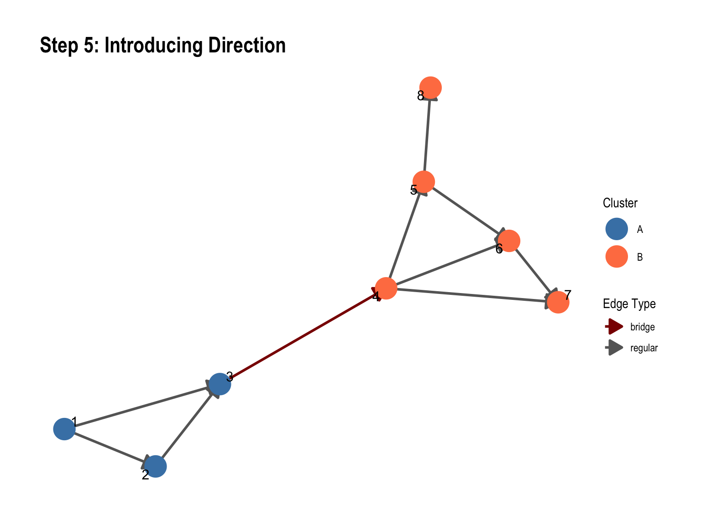
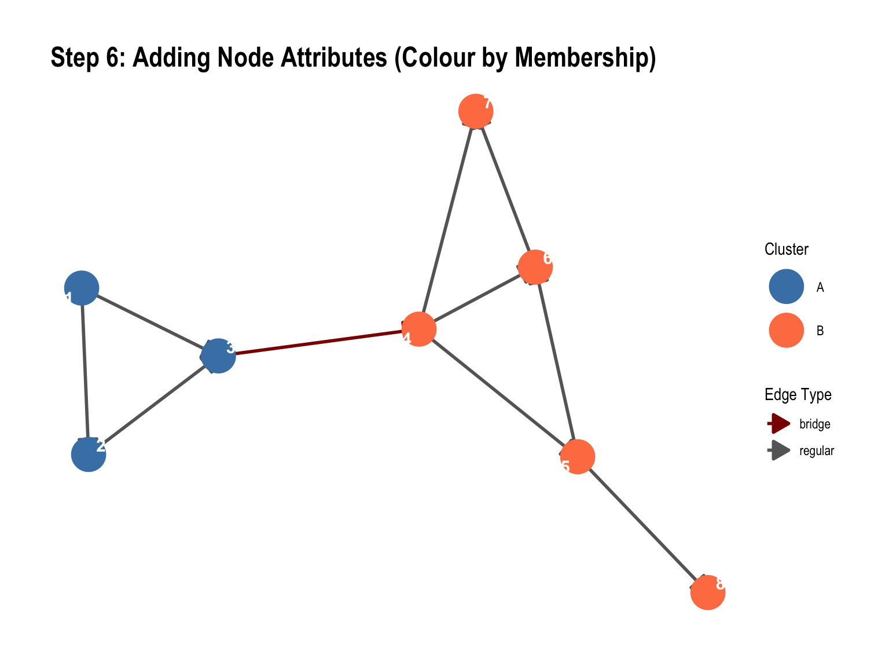

library(igraph)
library(tidygraph)
library(ggraph)
library(tidyverse)Building Networks in R: A Step-by-Step Walkthrough
Social Network Analysis Workshop
Setup
Load the required packages:
We’ll build networks progressively, starting with three nodes and eventually adding structure, direction, and attributes.
Step 1: Three Isolated Nodes
Create a simple graph with three vertices and no edges yet.
# Create vertices
nodes_1 <- tibble(
id = 1:3,
name = c("A", "B", "C")
)
# Create empty edge list
edges_1 <- tibble(
from = integer(0),
to = integer(0)
)
# Build the graph
g1 <- tbl_graph(nodes = nodes_1, edges = edges_1, directed = FALSE)
# Display
g1# A tbl_graph: 3 nodes and 0 edges
#
# An unrooted forest with 3 trees
#
# A tibble: 3 × 2
id name
<int> <chr>
1 1 A
2 2 B
3 3 C
#
# A tibble: 0 × 2
# ℹ 2 variables: from <int>, to <int>Visualise the isolated nodes:
ggraph(g1, layout = "fr") +
geom_node_point(size = 8, colour = "steelblue") +
geom_node_text(aes(label = name), repel = TRUE, size = 5) +
theme_graph() +
labs(title = "Step 1: Three Isolated Nodes")
Step 2: Adding Edges to the Nodes
Now we connect the three nodes with edges.
# Define edges
edges_2 <- tibble(
from = c(1, 2),
to = c(2, 3)
)
# Build the graph
g2 <- tbl_graph(nodes = nodes_1, edges = edges_2, directed = FALSE)
g2# A tbl_graph: 3 nodes and 2 edges
#
# An unrooted tree
#
# A tibble: 3 × 2
id name
<int> <chr>
1 1 A
2 2 B
3 3 C
#
# A tibble: 2 × 2
from to
<int> <int>
1 1 2
2 2 3Visualise with edges:
ggraph(g2, layout = "fr") +
geom_edge_link(width = 1, colour = "grey40") +
geom_node_point(size = 8, colour = "steelblue") +
geom_node_text(aes(label = name), repel = TRUE, size = 5) +
theme_graph() +
labs(title = "Step 2: Adding Edges to the Nodes")Warning: Using the `size` aesthetic in this geom was deprecated in ggplot2 3.4.0.
ℹ Please use `linewidth` in the `default_aes` field and elsewhere instead.
Step 3: Adding a Second Cluster
Introduce five additional nodes, densely connected among themselves but isolated from the first cluster.
# Define all nodes (3 + 5)
nodes_3 <- tibble(
id = 1:8,
cluster = c(rep("A", 3), rep("B", 5))
)
# Define edges: dense connections within each cluster, none between
edges_3 <- tibble(
from = c(
# Cluster A: fully connected triangle
1, 1, 2,
# Cluster B: densely connected (not fully, for realism)
4, 4, 4, 5, 5, 6
),
to = c(
# Cluster A
2, 3, 3,
# Cluster B
5, 6, 7, 6, 8, 7
)
)
# Build the graph
g3 <- tbl_graph(nodes = nodes_3, edges = edges_3, directed = FALSE)
g3# A tbl_graph: 8 nodes and 9 edges
#
# An undirected simple graph with 2 components
#
# A tibble: 8 × 2
id cluster
<int> <chr>
1 1 A
2 2 A
3 3 A
4 4 B
5 5 B
6 6 B
# ℹ 2 more rows
#
# A tibble: 9 × 2
from to
<int> <int>
1 1 2
2 1 3
3 2 3
# ℹ 6 more rowsVisualise the two clusters:
ggraph(g3, layout = "fr") +
geom_edge_link(width = 1, colour = "grey40") +
geom_node_point(aes(colour = cluster), size = 8) +
geom_node_text(aes(label = id), repel = TRUE, size = 4) +
scale_colour_manual(values = c("A" = "steelblue", "B" = "coral")) +
theme_graph() +
labs(title = "Step 3: Adding a Second Cluster")
Notice the structure: two dense groups with no connections between them.
Step 4: Bridging the Clusters
Add one edge connecting the two clusters. This single edge is a bridge.
# Add one edge from cluster A to cluster B
edges_4 <- edges_3 %>%
add_row(from = 3, to = 4)
# Build the graph
g4 <- tbl_graph(nodes = nodes_3, edges = edges_4, directed = FALSE)
g4# A tbl_graph: 8 nodes and 10 edges
#
# An undirected simple graph with 1 component
#
# A tibble: 8 × 2
id cluster
<int> <chr>
1 1 A
2 2 A
3 3 A
4 4 B
5 5 B
6 6 B
# ℹ 2 more rows
#
# A tibble: 10 × 2
from to
<int> <int>
1 1 2
2 1 3
3 2 3
# ℹ 7 more rowsVisualise with the bridge:
# Identify the bridge edge (the last one)
bridge_edge <- edges_4 %>% slice(n())
ggraph(g4, layout = "fr") +
geom_edge_link(aes(colour = ifelse(from == 3 & to == 4, "bridge", "regular")),
width = 1) +
geom_node_point(aes(colour = cluster), size = 8) +
geom_node_text(aes(label = id), repel = TRUE, size = 4) +
scale_colour_manual(name = "Cluster",
values = c("A" = "steelblue", "B" = "coral")) +
scale_edge_colour_manual(name = "Edge Type",
values = c("bridge" = "darkred", "regular" = "grey40")) +
theme_graph() +
labs(title = "Step 4: Bridging the Clusters")
This single edge (node 3 to node 4) is critical for information flow between the two otherwise isolated groups.
Step 5: Introducing Direction
Add arrowheads to show direction. Convert to a directed graph.
# Same edges, but now directed
g5 <- tbl_graph(nodes = nodes_3, edges = edges_4, directed = TRUE)
g5# A tbl_graph: 8 nodes and 10 edges
#
# A directed acyclic simple graph with 1 component
#
# A tibble: 8 × 2
id cluster
<int> <chr>
1 1 A
2 2 A
3 3 A
4 4 B
5 5 B
6 6 B
# ℹ 2 more rows
#
# A tibble: 10 × 2
from to
<int> <int>
1 1 2
2 1 3
3 2 3
# ℹ 7 more rowsVisualise as a directed graph:
ggraph(g5, layout = "fr") +
geom_edge_link(
aes(colour = ifelse(from == 3 & to == 4, "bridge", "regular")),
width = 1,
arrow = arrow(length = unit(4, "mm"), type = "closed")
) +
geom_node_point(aes(colour = cluster), size = 8) +
geom_node_text(aes(label = id), repel = TRUE, size = 4) +
scale_colour_manual(name = "Cluster",
values = c("A" = "steelblue", "B" = "coral")) +
scale_edge_colour_manual(name = "Edge Type",
values = c("bridge" = "darkred", "regular" = "grey40")) +
theme_graph() +
labs(title = "Step 5: Introducing Direction")
In directed graphs, \(i \to j\) is distinct from \(j \to i\). The arrowheads show the direction of the relationship.
Step 6: Adding Node Attributes (Colour by Membership)
Colour nodes by cluster membership: one colour for cluster A, another for cluster B.
# Nodes already have cluster attribute
nodes_3# A tibble: 8 × 2
id cluster
<int> <chr>
1 1 A
2 2 A
3 3 A
4 4 B
5 5 B
6 6 B
7 7 B
8 8 B Visualise with colour by cluster:
ggraph(g5, layout = "fr") +
geom_edge_link(
aes(colour = ifelse(from == 3 & to == 4, "bridge", "regular")),
width = 1,
arrow = arrow(length = unit(4, "mm"), type = "closed")
) +
geom_node_point(aes(colour = cluster), size = 10) +
geom_node_text(aes(label = id), repel = TRUE, size = 4, colour = "white", fontface = "bold") +
scale_colour_manual(name = "Cluster",
values = c("A" = "steelblue", "B" = "coral")) +
scale_edge_colour_manual(name = "Edge Type",
values = c("bridge" = "darkred", "regular" = "grey40")) +
theme_graph() +
labs(title = "Step 6: Adding Node Attributes (Colour by Membership)")
Node attributes (colour, size, shape, etc.) encode information beyond the network structure itself. Here, colour reveals the cluster membership.
Summary
We’ve built a network progressively:
- Three isolated nodes: Starting point.
- Add edges: Connect nodes to form relationships.
- Add a second cluster: Introduce structure with two distinct groups.
- Add a bridge: Connect the clusters with a single critical edge.
- Introduce direction: Show asymmetric relationships with arrows.
- Add node attributes: Encode membership information via colour.
Each step reveals a different aspect of network structure and how to represent it in R.
Exercise
Try modifying the code:
- Add more edges within each cluster. How does this change the visualisation?
- Change the bridge from node 3→4 to node 2→5. Does the bridge still matter?
- Add weights to edges. Hint: add a
weightcolumn to the edge list. - Create a third cluster and add multiple bridges connecting them.